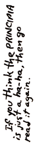

|
THUS ENDS PRINCIPIA DISCORDIA
This being the 4th Edition, March 1970, San Francisco; a revision of the 3rd Edition of 500 copies, whomped together in Tampa 1969; which revised the 2nd Edition of 100 copies from Los Angeles 1969; which was a revision of "PRINCIPIA DISCORDIA or HOW THE WEST WAS LOST" published in New Orleans in 1965 in five copies, which were mostly lost.
(K) ALL RIGHTS REVERSED - Reprint what you like
Published by POEE Head Temple - San Francisco
"ON THE FUTURE SITE OF BEAUTIFUL
SAN ANDREAS CANYON"
|
OFFICE OF MY HIGH REVERENCE
MALACLYPSE THE YOUNGER KSC
OPOVIG HIGH PRIEST POEE
|
|
THE LAST WORD
The foregoing document was revealed to Mal-2 by the Goddess Herself through many consultations with Her within her Pineal Gland. It is guaranteed to be the Word of Goddess. However, it is only fair to state that Goddess doesn't always say the same thing to each listener, and that other Episkoposes are sometimes told quite different things in their Revelations, which are also the Word of Goddess. Consequently, if you prefer a Discordian Sect other than POEE, then none of these Truths are binding, and it is a rotten shame that you have read all the way down to the very last
word.
|